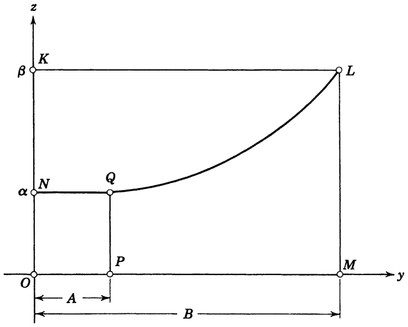

a. 一般公式
处理积分问题的第二种常用方法，实质上就是把乘积的求导法则 (fg)′=f′g+fg′ 写成积分形式。相应的积分公式是（参见第 189 页）
f(x)g(x)=∫g(x)f′(x)dx+∫f(x)g′(x)dx,即
∫f(x)g′(x)dx=f(x)g(x)−∫g(x)f′(x)dx.(54)用莱布尼茨的微分记号来写，就是
∫fdg=fg−∫gdf.(54a)这个公式称为分部积分公式。它把一个积分的计算化为另一个积分的计算。一个给定的被积函数往往有许多种写成乘积 f(x)g′(x) 的办法，所以这个公式为变换积分提供了有效的工具。对定积分，分部积分公式写作
∫abf(x)g′(x)dx=f(x)g(x)∣ab−∫abg(x)f′(x)dx=f(b)g(b)−f(a)g(a)−∫abg(x)f′(x)dx.(54b)这既可由乘积求导公式在 a,b 之间直接积分得到，也可由式 (54) 在 b,a 两点的值相减得到。
式 (54b) 有一个简单的几何解释。设 y=f(x)、z=g(x) 单调，且 f(a)=A, f(b)=B, g(a)=α, g(b)=β。从第一个方程解出反函数，代入第二个方程，就把 z 表示为 y 的函数。设这个函数单调增加。因为 dy=f′(x)dx, dz=g′(x)dx，分部积分公式可写为［参见第 265 页换元法则 (18)］
∫αβydz+∫ABzdy=Bβ−Aα.这正是图 3.27 中的面积关系：NQLK 的面积加 PMLQ 的面积，等于 OMLK 的面积减 OPQN 的面积。

图 3.27
第一个例子是 ∫logxdx=∫logx⋅1dx。把被积函数这样写，是要取 f(x)=logx, g′(x)=1，于是 f′(x)=1/x, g(x)=x。公式给出
∫logxdx=xlogx−∫xxdx=xlogx−x.(55)所以最后这个式子就是对数的不定积分，立即可以用求导验证。
b. 分部积分法的更多例子
取 f(x)=x, g′(x)=ex，则 f′(x)=1, g(x)=ex，得到
∫xexdx=ex(x−1).(56)同样，
∫xsinxdx=−xcosx+sinx,(57)∫xcosxdx=xsinx+cosx.(58)取 f(x)=logx, g′(x)=xα，得到
∫xαlogxdx=α+1xα+1(logx−α+11).(59)这里必须假定 α=−1。若 α=−1，则 ∫(1/x)logxdx=(logx)2−∫logx⋅dx/x。将右边的积分移至左边，即得［参见第 266 页式 (22)］
∫x1logxdx=21(logx)2.(60)为算 ∫arcsinxdx，取 f(x)=arcsinx, g′(x)=1，于是 ∫arcsinxdx=xarcsinx−∫xdx/1−x2。右边的积分可按第 271 页式 (29) 计算，得
∫arcsinxdx=xarcsinx+1−x2.(61)同理可得
∫arctanxdx=xarctanx−21log(1+x2),(62)以及许多类似的结果。
下面的例子略有不同。连续分部积分以后，原来的积分又出现了，从而得到一个关于这个积分的方程。这样有
∫eaxsinbxdx=−b1eaxcosbx+ba∫eaxcosbxdx=−b1eaxcosbx+b2aeaxsinbx−b2a2∫eaxsinbxdx.从方程中解出 ∫eaxsinbxdx，得到
∫eaxsinbxdx=a2+b21eax(asinbx−bcosbx).(63)同样的方法给出
∫eaxcosbxdx=a2+b21eax(acosbx+bsinbx).(64)c. f(b)+f(a) 的积分公式
最后再举一例，推导一个有趣的公式，用定积分表示两端函数值的和 f(b)+f(a)（基本公式给出的则是差 f(b)−f(a)）。取 1=g′(x)，其中 g(x)=x−m，常数 m 可由我们选择。分部积分给出不定积分关系
∫f(x)dx+∫f′(x)(x−m)dx=f(x)(x−m),在 a,b 之间积分便有
∫abf(x)dx+∫abf′(x)(x−m)dx=f(b)(b−m)−f(a)(a−m).对任意 a,b，取 m=(a+b)/2 为二者的中点，便得到读者很容易验证的等式
2b−a[f(a)+f(b)]=∫abf(x)dx+∫ab(x−m)f′(x)dx.d. 递推公式
许多被积函数除依赖于自变量外，还依赖于整数指标 n。作一次分部积分，有时虽不能立即求出积分的值，却能得到一个形式相似、指标 n 的值较小的积分。经过若干步，便有可能到达基本积分表（第 263 页）可以处理的积分。这样的过程称为递推。
下面是一些例子。对正整数 m,n，可以反复用分部积分来计算 ∫cosnxdx, ∫sinnxdx, ∫sinmxcosnxdx。对于第一式，取 f(x)=cosn−1x, g(x)=sinx，就有
∫cosnxdx=cosn−1xsinx+(n−1)∫cosn−2xsin2xdx.右端可写成 cosn−1xsinx+(n−1)∫cosn−2xdx−(n−1)∫cosnxdx，由此得递推关系
∫cosnxdx=n1cosn−1xsinx+nn−1∫cosn−2xdx.(65)这样逐步降低被积函数中的指数，n 为奇数时最后得到 ∫cosxdx=sinx，n 为偶数时最后得到 ∫dx=x。同理有
∫sinnxdx=−n1sinn−1xcosx+nn−1∫sinn−2xdx,(66)∫sinmxcosnxdx=m+nsinm+1xcosn−1x+m+nn−1∫sinmxcosn−2xdx.(67)特别地，可得 ∫sin2xdx=21(x−sinxcosx)，∫cos2xdx=21(x+sinxcosx)。前面也曾用换元法得到它们［第 272 页式 (42)、(43)］。双曲函数的相应积分当然也可用完全相同的方法计算：
∫sinh2xdx=21(−x+sinhxcoshx),(68)∫cosh2xdx=21(x+sinhxcoshx).(69)再列出几条由下列变换得到的递推公式。
∫(logx)mdx=x(logx)m−m∫(logx)m−1dx,(70)∫xmexdx=xmex−m∫xm−1exdx,(71)∫xmsinxdx=−xmcosx+m∫xm−1cosxdx,(72)∫xmcosxdx=xmsinx−m∫xm−1sinxdx,(73)∫xa(logx)mdx=a+1xa+1(logx)m−a+1m∫xa(logx)m−1dx(a=−1).(74)e. 关于 π 的沃利斯无穷乘积
当 n>1 时，∫sinnxdx 的递推公式能给出数 π 的一个美妙的“无穷乘积”表达式。在公式
∫sinnxdx=−n1sinn−1xcosx+nn−1∫sinn−2xdx中代入上下限 0,π/2，得
∫0π/2sinnxdx=nn−1∫0π/2sinn−2xdx(n>1).(75)反复应用递推式，分 n=2m 和 n=2m+1 两种情形，分别得到
∫0π/2sin2mxdx=2m2m−12m−22m−3⋯21∫0π/2dx,(76)∫0π/2sin2m+1xdx=2m+12m2m−12m−2⋯32∫0π/2sinxdx.(76a)因此
∫0π/2sin2mxdx=2m2m−12m−22m−3⋯21⋅2π,(77)∫0π/2sin2m+1xdx=2m+12m2m−12m−2⋯32.(77a)将这两个结果相除，便有
2π=1⋅32⋅23⋅54⋅45⋅76⋅6⋯(2m−1)(2m+1)2m⋅2m∫0π/2sin2m+1xdx∫0π/2sin2mxdx.(78)当 m 增大时，右边两个积分的商收敛于 1。理由如下。在 0<x<π/2 时，0<sinx<1，所以 0<sin2m+1x≤sin2mx≤sin2m−1x。因此
0<∫0π/2sin2m+1xdx≤∫0π/2sin2mxdx≤∫0π/2sin2m−1xdx.各项同除以 ∫0π/2sin2m+1xdx，并注意由式 (75) 有
∫0π/2sin2m+1xdx∫0π/2sin2m−1xdx=2m2m+1=1+2m1,便得到
1≤∫0π/2sin2m+1xdx∫0π/2sin2mxdx≤1+2m1.所说的收敛即由此推出。因此
2π=m→∞lim123234545676⋯2m−12m2m+12m.(79)沃利斯的这个乘积公式有着简单的构造规律，在 π 与整数之间建立了一个极为奇妙的联系。
π 的乘积
作为一个容易得到的推论，还可以导出 π 的一个同样有趣的表达式。注意 limm→∞2m/(2m+1)=1，于是可写成
m→∞lim32⋅52⋯(2m−1)222⋅42⋯(2m−2)22m=2π.开平方，再把分子和分母都乘以 2⋅4⋯(2m−2)，得到
2π=m→∞lim3⋅5⋯(2m−1)2⋅4⋯(2m−2)2m=m→∞lim(2m−1)!22⋅42⋯(2m−2)22m=m→∞lim(2m)!22⋅42⋯(2m)22m2m=m→∞lim(2m)!2m(22⋅12)(22⋅22)(22⋅32)⋯(22⋅m2).最后便有
m→∞lim(2m)!m(m!)222m=π.(80)这是沃利斯乘积的另一种形式，后面还要用到（参见第六章附录）。
译者注 奇、偶两条递推路线的终点不同。一条留下 ∫0π/21dx=π/2，另一条留下 ∫0π/2sinxdx=1。比较两个相邻幂次的积分，正好把 π/2 与那串整数乘积联系起来。